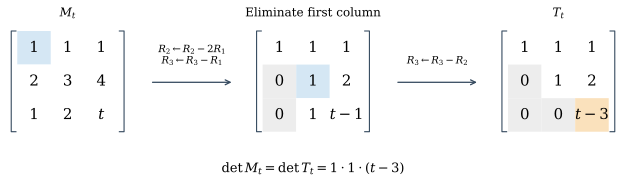
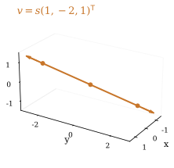
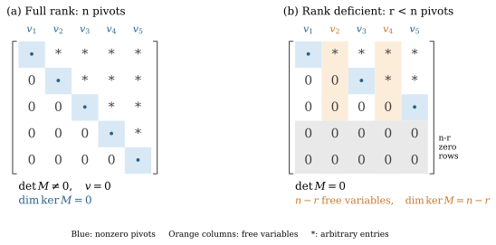
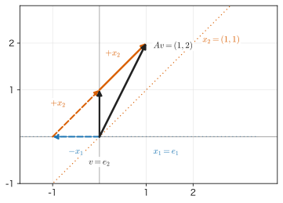
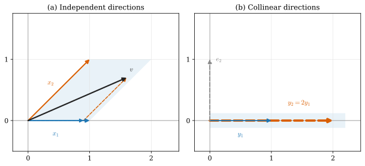

Created创建 Updated最后更新
Matrix Decompositions · 01
Eigendecomposition: Finding Invariant Directions
1. Eigenvalues and Eigenvectors: Definition and Geometric Meaning
Consider the matrix
acting on vectors in the plane. Take three vectors: e_1=(1,0)^{\mathsf T}, e_2=(0,1)^{\mathsf T}, and e_3=(1,1)^{\mathsf T}; the subscripts simply number the three examples. Multiplying each on the left by A gives
As Fig. 1 shows, e_1 stays where it is, e_2 changes both its length and its direction, and e_3 is stretched by a factor of two along its original direction.

Whenever a nonzero vector v and a number \lambda satisfy
we call \lambda an eigenvalue of A and v a corresponding eigenvector [1, §6.1]. For now, this article considers only real matrices with real eigenvalues. Here e_1 and e_3 correspond to \lambda=1 and \lambda=2. The absolute value |\lambda| gives the factor by which the length changes; for \lambda<0 the vector is also reversed, and for \lambda=0 it collapses to the origin. Any nonzero multiple of an eigenvector still satisfies Eq. (1), so its length can be chosen freely. The two eigendirections e_1 and e_3 make an angle of 45^\circ. Each is stretched independently along its own direction, and they need not be perpendicular.
Above, two eigendirections were found by direct multiplication. For a given matrix, how can the eigenvalues and eigenvectors be found systematically?
2. Solving the Eigenvalue Equation
2.1 From a Two-Dimensional Equation to Finite Square Matrices
In Eq. (1) both \lambda and v are unknown. Let v=(x,y)^{\mathsf T} and first expand the matrix product row by row:
Moving the right-hand side to the left gives
The second equation requires (2-\lambda)y=0, which splits into two cases.
If y=0: the first equation becomes (1-\lambda)x=0. An eigenvector must satisfy (x,y)\ne(0,0), so here x\ne0, and the only possibility is \lambda=1. Taking x=1 gives v=(1,0)^{\mathsf T}.
If y\ne0: the second equation requires 2-\lambda=0, so \lambda=2. Substituting into the first gives -x+y=0, that is, x=y. Taking x=y=1 gives v=(1,1)^{\mathsf T}.
These two cases cover every possibility. Nonzero solutions exist only for \lambda=1 or \lambda=2; for any other \lambda, the second equation first forces y=0, and the first then forces x=0.
With more components, the rearranged equations can be written uniformly as
Write M=A-\lambda I. To say that M is invertible means that there is a matrix M^{-1} that undoes the action of M, with M^{-1}M=MM^{-1}=I. If such an inverse exists, multiplying both sides of Mv=0 on the left by it gives
This argument by contradiction uses only the definition of the inverse, so it holds for any finite n\times n square matrix: for Mv=0 to have a nonzero solution, M cannot be invertible.
2.2 Gaussian Elimination and the Determinant
A system Mv=0 in n unknown components can be solved by Gaussian elimination. If two equations both contain x, subtracting a suitable multiple of the first from the second removes x from the second. As an example, consider the three-dimensional system with a parameter t:
Let R_i denote the equation in row i. Keep the first row and use its coefficient of x, which is 1, as the pivot to eliminate x from the two rows below:
Then keep the second row and use its coefficient of y, again 1, as the pivot to eliminate y from the third row:
Every step can be undone. For example, adding back the 2R_1 subtracted from the second row restores the original equation. The solution set is therefore the same before and after elimination. The result is an upper-triangular system:

Now solve from the last row upward; this process is called back substitution.
When t\ne3: the third row gives z=0, then the second row gives y=0 and the first row gives x=0. All three pivots are nonzero, and only the zero solution exists.
When t=3: the third row becomes 0=0 and no longer constrains z. We may therefore choose z=s freely; the second row gives y=-2s, and the first row gives x=s. All solutions are
v=s\begin{bmatrix}1\\-2\\1\end{bmatrix},\qquad s\in\mathbb R.Any s\ne0 gives a nonzero solution. Here z is called a free variable; these solutions form a line through the origin, the null space of M_3. In general, the null space of a matrix M is the set of all vectors satisfying Mv=0.
Figure 3 shows the null space for t=3. Taking s=-1,0,1 gives (-1,2,-1)^{\mathsf T}, (0,0,0)^{\mathsf T}, and (1,-2,1)^{\mathsf T}. Letting s vary continuously traces out the whole line. Every point on the line is an input vector that M_3 sends to the zero vector.

The nonzero solutions above appear when the last pivot t-3 vanishes. This condition can also be expressed through the determinant. The operation used here, subtracting a multiple of one row from another, leaves the determinant unchanged, so
Here we expand along the first column, where two terms drop out because their coefficients are zero; expanding the remaining two-dimensional determinant gives the product of the three diagonal entries. Expanding column by column in the same way gives this result for any upper-triangular matrix.
Why row operations preserve the determinant can also be written out directly. When the second row is replaced by R_2-2R_1, linearity of the determinant in the second row gives
The last step uses the fact that a determinant with two equal rows is zero: swapping those two rows leaves the matrix unchanged but flips the sign of the determinant, so the determinant must be zero.
Thus t=3 means, all at once, that the last pivot vanishes, that the equations have nonzero solutions, and that \det M_t=0. The determinant turns this solvability condition into an equation for the parameter t.
For an n\times n square matrix, elimination still proceeds column by column. If the current pivot position holds a zero but some entry below it is nonzero, swapping two rows lets elimination continue; a swap changes only the sign of the determinant, not whether it is zero. If the column is zero in all remaining rows, move on to the following columns to look for a pivot. After elimination, every nonzero row has a pivot, representing one independent constraint. The total number of pivots is called the rank of the matrix, written r=\operatorname{rank}(M); it also equals the largest number of linearly independent columns. For an n\times n square matrix, r=n is called full rank and r<n rank deficient. In the example above there are three pivots when t\ne3, so \operatorname{rank}(M_t)=3; when t=3 there are only two, so \operatorname{rank}(M_3)=2. The two echelon structures are shown in Fig. 4 [2, §3.2]:

n pivots: the diagonal entries of the echelon matrix are all nonzero, so the determinant is nonzero. Back substitution from the last row upward fixes each component to zero in turn. One can also scale each pivot to 1 and, starting from the last pivot, eliminate the entries above it, reducing the whole matrix step by step to the identity matrix I.
Only r<n pivots: the last n-r rows are zero rows reading 0=0, so the determinant is zero. There are also n-r free variables; setting one of them to 1 and the others to 0, then back-substituting for the pivot components, gives a nonzero solution. The dimension of the null space is n-r; Fig. 3 is the one-dimensional case with n=3 and r=2. The nonzero solution already shows that the original matrix is not invertible.
Writing \ker M for the null space, the relation between the number of pivots and the number of free variables reads
At full rank, let E denote the combined effect of all the invertible row operations that reduce M to I, so that EM=I; from M=E^{-1} it follows that M^{-1}=E. Together with the nonzero-solution and determinant conditions above, this gives, for a finite square matrix,
2.3 Back to the Eigenvalue Equation
With M=A-\lambda I, the condition for a nonzero eigenvector becomes
For A=\begin{bmatrix}1&1\\0&2\end{bmatrix}, subtract \lambda from the diagonal and expand:
Setting this to zero gives the two roots
This agrees with the result of solving the equations directly in Section 2.1. The corresponding eigenvectors are chosen as
3. Eigendecomposition and Change of Basis
3.1 Decomposing a Vector Along the Eigendirections
Once the action of A on its eigenvectors is known, any vector can be decomposed along the eigenbasis, each component multiplied by its eigenvalue, and the pieces recombined. In Section 1, e_2=(0,1)^{\mathsf T} changed direction under A. Using the two eigenvectors found above, x_1=(1,0)^{\mathsf T} and x_2=(1,1)^{\mathsf T}, we can split it as
Substituting the vectors and comparing coordinates one by one gives
So c_1=-1 and c_2=1, that is, e_2=-x_1+x_2. When the matrix acts on this sum, it can act on the two components separately. Since Ax_1=x_1 and Ax_2=2x_2,
This agrees with direct multiplication. In Fig. 5, the component along x_1 stays the same and the component along x_2 doubles; when the two are added, the direction of the whole vector changes with them.

3.2 Writing the Three Steps as an Eigendecomposition
Arrange the two eigenvectors as the columns of a matrix, and write the decomposition coefficients as a column vector c:
In this example
Hence, for any vector v, the three steps above can be written as follows.
Find the coefficients: c=X^{-1}v.
Multiply each coefficient by its eigenvalue: c'=\Lambda c, where \Lambda=\operatorname{diag}(1,2).
Recombine: Av=c_1\lambda_1x_1+c_2\lambda_2x_2=Xc'.
Chaining the three steps gives
This holds for every vector v, which yields the eigendecomposition [1, §6.2]:
Matrix multiplication acts from right to left: X^{-1} finds the coefficients, \Lambda scales each one, and X recombines the vector. A short check with the eigenvalue equation agrees: the two columns of AX are Ax_1=x_1 and Ax_2=2x_2, so AX=X\Lambda, consistent with Eq. (5).
Multiplying Eq. (5) by X^{-1} on the left and by X on the right gives X^{-1}AX=\Lambda. This says that the same transformation is represented by a diagonal matrix in the eigenbasis, with each coordinate stretched independently; the process is called diagonalization.
4. When an Eigendecomposition Exists
4.1 Eigendirections That Can Serve as Coordinates
Section 3 built Av=X\Lambda X^{-1}v on using X^{-1} to find the coefficients. The two columns of X are eigenvectors, and whether X has an inverse depends on whether these two directions span the whole plane.
From c=X^{-1}v in Section 3.2, for v=(a,b)^{\mathsf T} we have c=(a-b,b)^{\mathsf T}, so
For arbitrary a,b the coefficients a-b and b are also arbitrary, so combinations of x_1,x_2 reach every point of the plane. They do not coincide, and together they form a basis of the plane.
For contrast, take two collinear directions:
Any combination c_1y_1+c_2y_2=(c_1+2c_2,0)^{\mathsf T} has second coordinate always zero, so no choice of c_1,c_2 reaches e_2=(0,1)^{\mathsf T}. These two directions span only the x-axis: two vectors in number, but only one direction.
The difference can also be written as an equation for the coefficients. If
the second component first gives c_2=0, and substituting back into the first gives c_1=0. Only the all-zero coefficients combine to the zero vector; such x_1,x_2 are called linearly independent. For y_1,y_2, the equation
has a nonzero solution: taking c_2=1 gives c_1=-2, so they are linearly dependent.
Arrange the eigenvectors of this example as columns,
and linear independence is exactly the condition for this square matrix to be invertible. Section 2.2 defined the rank as the number of pivots, that is, the largest number of linearly independent columns; here the two columns are independent, so \operatorname{rank}X=2. In two dimensions the determinant also has a meaning as area: |\det X| is the area of the parallelogram with the two columns as sides, and here \det X=1; when the two columns are collinear the parallelogram degenerates to a segment, its area is zero, and the matrix is not invertible. So, for an n\times n square matrix, the following four statements are equivalent:
As long as X is invertible, the form in Eq. (5) holds. Figure 6 compares the two cases.

4.2 Eigenvectors for Distinct Eigenvalues Are Independent
When can we be sure of getting n independent eigenvectors? If the n eigenvalues of A are all distinct, the answer is always yes.
Start with two eigenvectors. Let
Suppose some combination of them equals zero:
Multiply both sides on the left by A, using the eigenvalue equation to replace Ax_i by \lambda_ix_i:
Now multiply Eq. (6) by \lambda_1:
Subtracting, the x_1 terms cancel:
Since \lambda_1\ne\lambda_2 and x_2\ne0, only c_2=0 is possible. Substituting back into Eq. (6) gives c_1x_1=0, and x_1\ne0 then gives c_1=0. So x_1,x_2 are linearly independent.
For n vectors the same subtraction works by induction. Let \lambda_1,\dots,\lambda_n be pairwise distinct, and suppose c_1x_1+\cdots+c_nx_n=0. Multiply both sides on the left by A, and multiply the original equation by \lambda_n:
After subtraction the term containing x_n vanishes:
Equation (7) is a zero combination of the first n-1 vectors, whose eigenvalues are still pairwise distinct. Induct on n:
Base case: for n=1, c_1x_1=0 with x_1\ne0 gives c_1=0, so a single nonzero vector is linearly independent.
Induction hypothesis: assume that eigenvectors for any n-1 distinct eigenvalues are linearly independent.
Applying it to Eq. (7): the first n-1 vectors are linearly independent, so every coefficient in their zero combination must vanish:
c_i(\lambda_i-\lambda_n)=0,\qquad i=1,\ldots,n-1.Since \lambda_i\ne\lambda_n, this gives c_1=\cdots=c_{n-1}=0.
The last coefficient: substituting these results back into the original equation leaves only c_nx_n=0. Since x_n\ne0, c_n=0.
Therefore the combination of these n vectors is zero only when all coefficients are zero. They are linearly independent, and the square matrix X they form is invertible [1, §6.2][2, §7.1.1].
Distinct eigenvalues are only a sufficient condition. When eigenvalues repeat, some matrices can still be diagonalized.
4.3 When Eigenvalues Repeat, Are There Still Enough Eigenvectors?
Consider two matrices:
They have the same characteristic polynomial:
Both have only the eigenvalue \lambda=1, a root repeated twice. Whether they can be diagonalized depends on whether two independent eigenvectors can be found. Let v=(x,y)^{\mathsf T} and substitute \lambda=1 into the eigenvalue equation for each matrix:
For I_2:
(I_2-I_2)v=\begin{bmatrix}0&0\\0&0\end{bmatrix}\begin{bmatrix}x\\y\end{bmatrix}=0.Neither x nor y is constrained, and the null space is the whole plane. Every nonzero vector is an eigenvector, and e_1,e_2 can be chosen as a basis. Here X=I_2 and \Lambda=I_2, so the eigendecomposition holds.
For J:
(J-I_2)v=\begin{bmatrix}0&1\\0&0\end{bmatrix}\begin{bmatrix}x\\y\end{bmatrix}=\begin{bmatrix}y\\0\end{bmatrix}=0.The equation requires y=0 with x free, so the null space is the single horizontal line. All eigenvectors are collinear, and two independent vectors cannot be chosen to form a basis of the plane, so J cannot be diagonalized.
Here “cannot be diagonalized” means that J cannot be written as X\Lambda X^{-1}; it does not mean that no eigenvalues or eigenvectors can be found. We have already found \lambda=1, with eigenvectors v=t(1,0)^{\mathsf T} (t\ne0). There are infinitely many of them but only one independent direction, which is not enough to form a basis of the two-dimensional space.
So a repeated eigenvalue does not in itself prevent diagonalization; what matters is still whether a full eigenbasis can be assembled.
The number of times a root is repeated in the characteristic polynomial is called its algebraic multiplicity; here \lambda=1 has algebraic multiplicity 2 for both matrices. The dimension of the corresponding eigenspace is called the geometric multiplicity: it is 2 for I_2 and 1 for J [2, §7.1.4].
4.4 Summary: Which Matrix Needs to Be Invertible?
Finding eigenvalues and carrying out an eigendecomposition involve three different matrices:
A-\lambda I must be non-invertible for \lambda to be an eigenvalue. The eigenvalue equation (A-\lambda I)v=0 needs a nonzero solution. If A-\lambda I were invertible, multiplying by its inverse on the left would give only v=0.
The matrix X of eigenvectors must be invertible for the eigendecomposition to be carried out with it. We need c=X^{-1}v to obtain the unique coordinates of any vector in the eigenbasis. What must be invertible is the matrix X formed by the columns; a single eigenvector has no invertibility to speak of.
The original matrix A need not be invertible. An eigenvalue may be zero, which merely squeezes the corresponding component to zero and does not prevent decomposing along the eigenbasis, scaling, and recombining. For example, K=\operatorname{diag}(1,0) satisfies Ke_1=e_1 and Ke_2=0, and still has the full eigenbasis e_1,e_2.
Thus J has determinant 1 and is invertible but cannot be diagonalized, while K=\operatorname{diag}(1,0) has determinant 0 and is not invertible but is already diagonal.
References
- G. Strang, Introduction to Linear Algebra, 6th ed. (Wellesley–Cambridge Press, 2023).
- G. H. Golub and C. F. Van Loan, Matrix Computations, 3rd ed. (Johns Hopkins University Press, 1996).